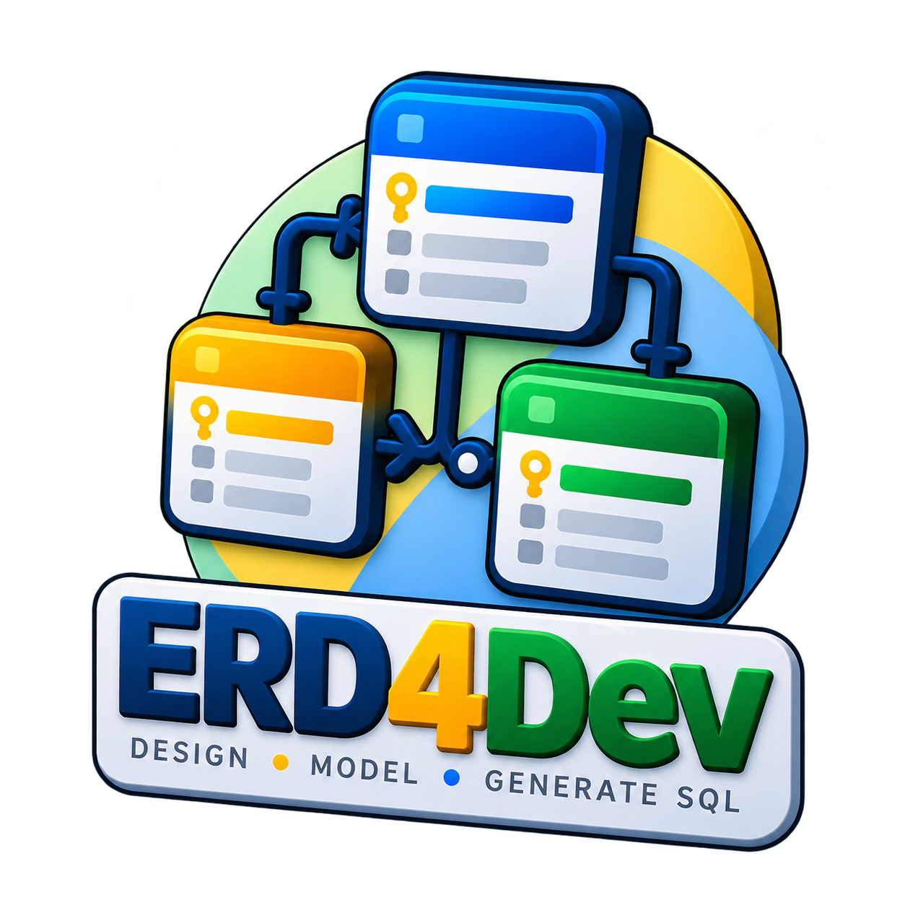
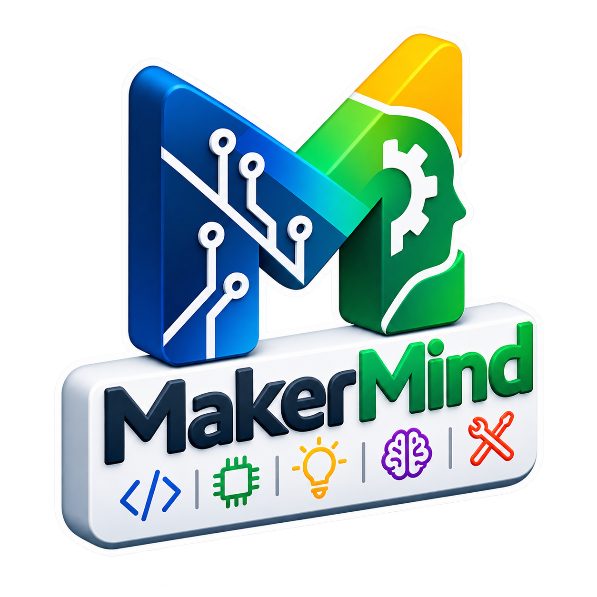

Drag your ideas
into the diagram.
Create entities, configure attributes, and define relationships in an organized visual experience.
ER modelingFrom your first entity to project-ready SQL. Model visually, connect relationships, and turn diagrams into real structures — without leaving Laravel.

See how data connects, evolve your structure, and keep everything in the same development environment.
Create entities, configure attributes, and define relationships in an organized visual experience.
ER modelingBring JSON, SQL, or metadata from connections configured in Laravel into your model.
Export SQL, diagram images, and Laravel Blueprint drafts for review.
ERD4Dev brings data modeling together in a visual interface integrated with your Laravel application. Start from scratch or build on what you already have.
A workflow designed so you spend more time on data architecture and less on configuration.
Create entities, attributes, and relationships in the visual editor.
Convert the ER model and refine tables, columns, and keys.
Export SQL or a Blueprint draft to review and use.
Install the package in your Laravel project via Composer and open the editor at the /erd route in your application.
composer require --dev makermind/erd4devhttp://localhost:8000/erd
ERD4DEV IDENTITYERD4Dev is an open-source project developed by Makermind to make database modeling more visual, accessible, and connected to the Laravel development workflow.
An independent tool designed to turn good ideas into organized structures.
Explore the projectDrag entities, change attributes, and create relationships. Then see how your model can become tables and SQL.
Like this workflow? Install ERD4Dev in your Laravel project to use the complete tool.